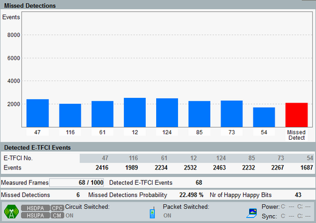

Measurement Results
All results of the measurement are shown on the E-AGCH tab of the RX measurements view. The results are described below.

E-AGCH tab
The diagram of HSUPA E-AGCH RX measurement provides two types of diagram:
- "E-TFCI Histogram" shows the distribution of all detected E-TFCI values 0 to 127.
- "Missed Detections" correlates the received E-TFCI values with expected E-TFCI values. The blue bars show the total number of the eight most frequently detected E-TFCI values. Only TTIs with sufficiently filled UE RLC transmit buffer (happy bit value: unhappy) are considered. The last red bar indicates the number of the expected E-TFCI values, the UE has not signaled.
The statistics of detected E-TFCI values and main measurement settings are displayed below the diagram.
- "Detected E-TFCI Events" table:
– For "Measurement Type" = "General Histogram" the table contains the statistics for the eight most frequently detected E-TFCI values displayed in diagram above. – For "Measurement Type" = "Missed Detection" the table contains the statistics of the detected E-TFCI values specified as expected E-TFCI values. Only TTIs with sufficiently filled UE RLC transmit buffer (happy bit value: unhappy) are considered. - "Measured Frames": total number of already measured transmission packets (subframes). In single shot mode, the number of already measured subframes to the number of total subframes to be measured is displayed.
- "Detected E-TFCI Events": the sum of all detected E-TFCI events. Because one E-TFCI value is transmitted per TTI, ideally the sum of all events equals to the measured frames count. A smaller number of E-TFCI events indicates transmission errors.
- "Missed Detections"*: number of the expected E-TFCI values, the UE has not signaled.
- "Missed Detections Probability"*: ratio of the "Missed Detections" to the "Detected E-TFCI Events".
- "No. of Happy Happy Bits"*: number of TTIs which were discarded because the happy bit was set. This value equals the number of E-TFCI values not considered for the measurement to ensure that the UE transmits at its maximum data rate.
* these results are relevant only for "Measurement Type" = "Missed Detection".